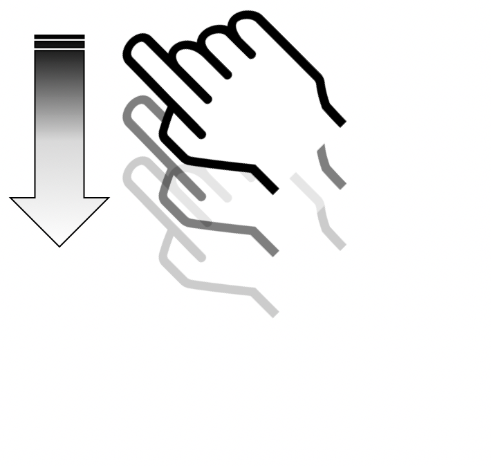
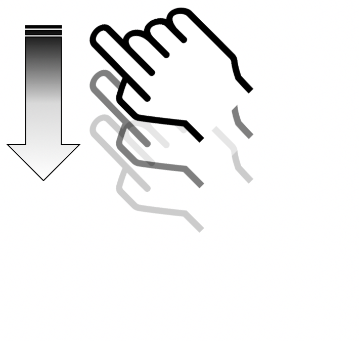
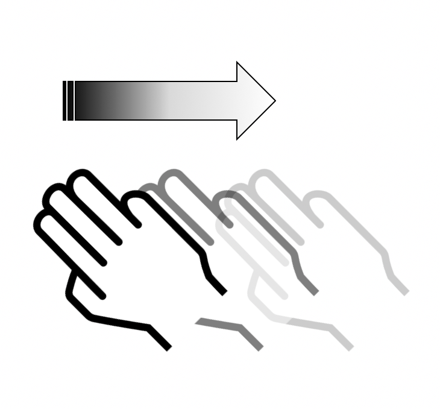
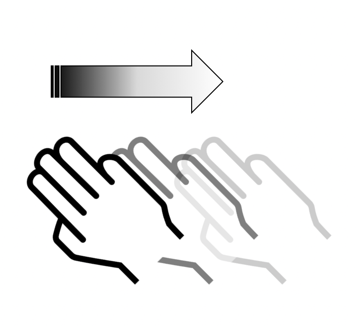

Your opinion matters ...
Have a bug or a feature request?
Please first check the issues and search for existing and closed issues. If your problem or idea is not addressed yet, please open a new issue.
About
Documentation under the CC BY SA 3.0 license, source code of this site and examples are available on github.
The Orange logo and some images or screenshots are the property of Orange:
Copyright (C) 2016 Orange SA All rights reserved
List of the concerned files
Guide for developers
The developer guide is intended to help developers with the major Android / iOS accessibility options. Through different categories, this guide explains how to use the accessibility attributes / methods and provides links to the official documentation of Google / Apple.
Two versions are available:
- Android version is about application development for the Google platform: Android.
- iOS version is about application development for the Apple platform: iOS.


Android developer guide
This guide aims to present the various accessibility options available on the Android SDK. Through different categories, this guide explains how to use the accessibility attributes / methods and provides links to the official Google documentation. Code snippets are also available to show you how to implement it.
Text alternative
Description:
On Android, the vocalization of an element is made through an attribute named contentDescription. This attribute, which accepts a single string parameter (and therefore localizable), completely redefines the text to be read by an accessibility service like TalkBack. This allows a component to be more explicit than the text displayed on the screen. For example, in the case of a button whose title is “OK”, the contentDescription attribute can indicate that the button is used to confirm an action.
The contentDescription attribute must also be used on custom elements to indicate their nature. For example, a clickable LinearLayout must have a contentDescription like “button_name, button” (it should also be focusable to be properly accessible, see the corresponding section).
Note that the contentDescription is available in any element that inherits from View. It is therefore possible to set a contentDescription on a TextView for example, as shown in the “accessibility guide - text alternative - abbreviations, dates and times” section.
Examples:
Simple example (localized):myTextView.setContentDescription(getString(R.string.criteria_alt_ex1_cd_txt2));
Example indicating the state and nature of a TabHost (not localized):
private class TabHostListener implements TabHost.OnTabChangeListener {
[...]
public void onTabChanged(String tabId) {setContentDescription(mTabHost, mTabsLabel);}
}
private void setContentDescription(TabHost mTabHost, String[] mTabsLabel) {
int tab = mTabHost.getCurrentTab();
int tabCount = mTabHost.getTabWidget().getTabCount();
for (int tabNumber = 0; tabNumber < tabCount; tabNumber++) {
CharSequence contentDescription = mTabsLabel[tabNumber];
contentDescription = contentDescription + ", tab " + (tabNumber + 1) + " on " + tabCount;
if (tabNumber == tab) {
contentDescription = contentDescription + ", selected";
}
mTabHost.getTabWidget().getChildAt(tabNumber).setContentDescription(contentDescription);
}
}Link:
Hiding elements from accessibility
Description:
It is possible via an accessibility attribute to hide elements from accessibility tools (e.g. TalkBack). By extension, it is possible to force some elements to be visible to accessibility tools.
ImportantForAccessibility: depending on the value of the attribute, it indicates whetheran element is visible or not to the Accessibility API.
Auto(0): this is the default, it is the system that decides. For example, aButtonwill have its default value set to 1 (yes) whereas aLinearLayoutwill default to 2 (no).Yes(1): the view is important for accessibility. For example, it can receive the TalkBack focus.No(2): the view is not important for accessibility. It does not trigger accessibility events and is therefore ignored by accessibility services such as TalkBack.NoHideDescendants(4): the view is not important for accessibility, nor are its children views. This will hide all the items in a view to accessibility at once. Very useful on custom elements.
Note: the “importantForAccessibility” attribute is available to any element that inherits from View.
Examples:
From xml:
android:importantForAccessibility="no"
Programmatically:
myView.setImportantForAccessibility(View.IMPORTANT_FOR_ACCESSIBILITY_NO_HIDE_DESCENDANTS);
Link:
Trigger a vocalization
Description:
It is very easy to trigger vocalizations with TalkBack. Triggering a vocalization is very useful for dynamic content, just like a LiveRegion (see corresponding section). To trigger a vocalization, just call the announceForAccessibility method with the id parameter of the string to vocalize.
Note: the announceForAccessibility method is available on any item that inherits from View and is made in the system’s language.
Warning: we are talking about TalkBack vocalization and not TTS (Text To Speech) that can operate whether TalkBack is on or off.
Example:
It is common to check the Android version before triggering TalkBack vocalization. This is because announceForAccessibility has been introduced in Jelly Bean.
if (Build.VERSION.SDK_INT >= Build.VERSION_CODES.JELLY_BEAN) {
getView().announceForAccessibility(getString(R.string.criteria_contentchange_ex1_announce));
}Link:
Check if Talkback is on
Description:
On Android, it is possible to know whether the Accessibility API is enabled, thus whether TalkBack is enabled.
Usage:
AccessibilityManager am = (AccessibilityManager) context.getSystemService(ACCESSIBILITY_SERVICE);
boolean isAccessibilityEnabled = am.isEnabled();Live region (dynamic content)
Description
You can specify to a view that it is a “live” region, it means that its content is subject to change dynamically and should in this case notify the Accessibility API. This will generate TalkBack vocalizations. A typical use case: on a form, if the user makes a mistake and an error message appears, the view containing the error message must be defined as a “live” region.
We must use the setAccessibilityLiveRegion method that takes a mode parameter for the live region. There are 3 modes:
ACCESSIBILITY_LIVE_REGION_NONE: this view is not a live region. This is the default for most views.ACCESSIBILITY_LIVE_REGION_POLITE: when a change occurs, vocalizations are triggered on the changes. These vocalizations are “polite”; they have lower priority than system vocalizations for example.ACCESSIBILITY_LIVE_REGION_ASSERTIVE: when a change occurs, vocalizations are triggered on the changes. These vocalizations are “assertive”; they have the highest priority and are immediately vocalized.
Note the setAccessibilityLiveRegion method is available on any class that inherits from View.
Example:
<TextView
[…]
android:accessibilityLiveRegion="polite" />Link:
Reading order (TalkBack)
Description:
By default, the reading order of voice synthesis depends on: the “logical” reading (in France), from left to right and top to bottom, and the xml order (order of elements declaration). It is quite possible to redefine the reading order with two attributes:
AccessibilityTraversalAfter: sets theidof a view after which this one is visited in accessibility traversal. A screen-reader must visit the content of the other view before the content of this one.AccessibilityTraversalBefore: sets theidof a view before which this one is visited in accessibility traversal. A screen-reader must visit the content of this view before the content of the one it precedes.
Note: These attributes can be used directly in the xml but also in the code via the setAccessibilityTraversalBefore and setAccessibilityTraversalAfter methods. These methods are available for any element that inherits from View.
Example:
volupButton.setAccessibilityTraversalAfter(myView.findViewById(R.id.remote0).getId());
voldownButton.setAccessibilityTraversalAfter(myView.findViewById(R.id.volup).getId());
channelplusButton.setAccessibilityTraversalAfter(myView.findViewById(R.id.voldown).getId());
channelminusButton.setAccessibilityTraversalAfter(myView.findViewById(R.id.channelplus).getId());Link:
Form
Description:
It is very important to bind the form fields with their labels. There are 2 major techniques to achieve this:
LabelFor: allow to specify a label to a view. This method takes theidof the view that it is associated with. This method can be used on almost any type of form field. We can also use the xmlandroid:labelForor programmaticallysetLabelFor.Hint: add an example text when the text field is empty. This method only works forTextView. Supports setting theidto a string. Can be used in the xmlandroid:hintor programmaticallysetHint.
Examples:
LabelFor in XML:
<TextView
[...]
android:labelFor="@+id/imageView11"
android:importantForAccessibility="no" />Note: It is very common, once the label is bound to its field, to hide the label from the accessibility service. This is because this one does not need to be vocalized by the Accessibility API anymore as it’s already associated with the form field (and will be vocalized by TalkBack for example).
Hint in xml:
<EditText
[...]
android:hint="@string/criteria_form_ex1_placeholder" />Links:
Text size
Description:
To make it possible for the “Huge font size” option to properly interact with the application, several points are to be respected during the development:
- Use dynamic font size: the “sp”. This unit, specific to Android, allows to have a font size proportional to the pixel density of the display. It is highly recommended to use it for text, if only for a uniform design on all types of Android devices.
- Manage content overflows: A common mistake is to use a dynamic text size (“sp”) but not to pay attention to the container size. If the text gets bigger, the container must adapt so there is no overflow. One can perfectly play with the
min-heightandheightattributes for correct results (theheightset towrap_contentandmin-heightset to the default desired height).
Link:
Accessibility events & custom views
Description:
On Android there are several events available for accessibility. You can manipulate them just like any event. They can enhance custom views that are not accessible enough. Using accessible events is not common on applications that are not intended to be used by disabled people, because other options are in most cases sufficient. Yet one must know they exist and they let you redefine the vocalization of a component.
For more information, please refer to the following links:
Example:
In this example, accessibility events are intercepted. Depending on their type (text has been changed in the view or the component has the TalkBack focus), we construct a vocalization to TalkBack.
@Override
@TargetApi(Build.VERSION_CODES.ICE_CREAM_SANDWICH)
public boolean dispatchPopulateAccessibilityEvent(AccessibilityEvent event) {
boolean result = super.dispatchPopulateAccessibilityEvent(event);
// Detect what type of accessibility event is being passed in.
int eventType = event.getEventType();
// Common case: The user has interacted with our view in some way. State may or may not have been changed. Read out the current status of the view.
if (eventType == AccessibilityEvent.TYPE_VIEW_TEXT_CHANGED) {
event.getText().clear();
event.getText().add("Possible reward: " + getBankValue() + ".");
result = true;
}
// When a user first focuses on our view, we'll also read out some simple instructions to make it clear that this is an interactive element.
if (eventType == AccessibilityEvent.TYPE_VIEW_ACCESSIBILITY_FOCUSED) {
event.getText().add("Click here to play again.");
result = true;
}
return result;
}Links:
WebView
Description:
WebViews are a special thing on Android. First, if you want a page to be accessible, its HTML content must be accessible as well, it must follow the international standards: the WCAG2. To know the requirements and learn techniques for developing an accessible Web, please visit the following section in our site: accessibility recommendations for the Web.
Second, on Android you must ensure that the WebView allows JavaScript mWebView.getSettings.setJavaScriptEnabled(true);
In these conditions, the page displayed through the WebView properly responds to the Accessibility API.
List vocalization
Description:
Sometimes lists are not vocalized correctly: the speech synthesis is trying to vocalize the whole list at once (only the items displayed on the screen). This is especially the case when using the RecyclerView. To overcome this problem, there is a simple fix. Just set the focusable attribute to true for each item in the list. This has the effect of forcing the speech synthesis (TalkBack) to read the items one by one.
Navigating via the focus (keyboard)
Description:
To handle focus-based navigation, make sure to:
- Allow interactive elements to receive the focus: focus-based navigation only concerns interactive elements. If, for example, your application has clickable custom views, it must be ensured that these views are focusable setting the
focusableattribute totrue. - Managing the focus display: interactive elements must have the
state_focuseddefined and must be easily distinguishable when having the focus. - Managing the focus order: through the
nextFocusDown,nextFocusUp,nextFocusRight,nextFocusLeftoptions, you can specify what view should take the focus when using the down, up, right and left arrow.
Most of the time, only the two first points must be taken care of. Android is able to determine very precisely the positions of the elements between them and therefore to provide a logical and coherent reading order for the keyboard.
Note: nextFocusDown, nextFocusUp, nextFocusRight, nextFocusLeft, focusable and other focus management options are available either in the xml or programmatically.
Example:
Tabhost selector handling the state_focused:
<selector xmlns:android="http://schemas.android.com/apk/res/android">
<!-- Non focused states -->
<item android:state_focused="false" android:state_selected="false" android:state_pressed="false" android:drawable="@drawable/tab_unselected_tab_selector" />
<item android:state_focused="false" android:state_selected="true" android:state_pressed="false" android:drawable="@drawable/tab_selected_tab_selector" />
<!-- Focused states -->
<item android:state_focused="true" android:state_selected="false" android:state_pressed="false" android:drawable="@drawable/tab_unselected_focused_tab_selector" />
<item android:state_focused="true" android:state_selected="true" android:state_pressed="false" android:drawable="@drawable/tab_selected_focused_tab_selector" />
<!-- Pressed -->
<!-- Non focused states -->
<item android:state_focused="false" android:state_selected="false" android:state_pressed="true" android:drawable="@drawable/tab_unselected_pressed_tab_selector" />
<item android:state_focused="false" android:state_selected="true" android:state_pressed="true" android:drawable="@drawable/tab_selected_pressed_tab_selector" />
<!-- Focused states -->
<item android:state_focused="true" android:state_selected="false" android:state_pressed="true" android:drawable="@drawable/tab_unselected_pressed_tab_selector" />
<item android:state_focused="true" android:state_selected="true" android:state_pressed="true" android:drawable="@drawable/tab_selected_pressed_tab_selector" />
</selector>Link:
iOS developer guide
This guide aims to present the various iOS SDK accessibility options. Through different categories, this guide explains how to use the accessibility attributes / methods and provides links to the official documentation from Apple. Code snippets are also available to show you how to implement it (mostly in Swift).
Text alternatives
Description:
On iOS, the vocalization of an element is done through four attributes: label, hint, value and trait.
The order of vocalization is always as follows: label, value, trait and hint. This order cannot be changed and the vocalization is performed only once.
A section of this guide is dedicated to the trait, we describe here the other three:
AccessibilityLabel: thelabelredefines the text read by VoiceOver. This allows a component to be more explicit than the text displayed on the screen. For example, for a button whose title is “OK”, this attribute can indicate that the button is used to confirm an action.AccessibilityValue: thevalueof an element is by default the completion percentage (e.g. a progress bar percentage). Note that for most elements available in the SDK, this value does not need to be set (the system automatically sets the value).AccessibilityHint: thehintdescribes the component’s behaviour. Example: “click here to get the result”.
These accessibility attributes are available via the builder interface but also programmatically. Anything inheriting from UIView has these attributes by default. These attributes accept an optional string, and are therefore easily localizable.
Examples:
Simple example (localized):accordionHeaderView.accessibilityHint = "example_elementState_foldArea_open_accessibilityHint".localized
Example of custom tabs indicating their trait and state:
@IBAction func buttonClicked(sender: AnyObject) {
for button:UIButton in buttonList {
if button == sender as! UIButton {
button.selected = true
if accessible {
button.accessibilityTraits = UIAccessibilityTraitButton + UIAccessibilityTraitSelected
}
button.setTitleColor(UIColor.orange_orangeForWhiteBG(), forState: UIControlState.Selected)
button.tintColor = UIColor.clearColor()
}
else {
button.selected = false
if accessible {
button.accessibilityTraits = UIAccessibilityTraitNone
button.accessibilityTraits = UIAccessibilityTraitButton
}
button.setTitleColor(UIColor.orange_blackColor(), forState: UIControlState.Normal)
}
}
}
func accessibleSegmentedControl() {
onePageButton.accessibilityTraits = UIAccessibilityTraitButton + UIAccessibilityTraitSelected
twoPageButton.accessibilityTraits = UIAccessibilityTraitButton
threePageButton.accessibilityTraits = UIAccessibilityTraitButton
onePageButton.accessibilityHint = "1 " + "common_of".localized + " " + String(buttonList.count)
twoPageButton.accessibilityHint = "2 " + "common_of".localized + " " + String(buttonList.count)
threePageButton.accessibilityHint = "3 " + "common_of".localized + " " + String(buttonList.count)
}Links:
Element trait
Description:
The accessibilityTraits attribute allows to specify the trait of an element to the accessibility API. Thus, it is possible to make a list item be considered as a button because it is clickable. Therefore, the accessibilityTrait attribute plays an important role on the element vocalization because the trait is vocalized by VoiceOver.
This accessibility attribute is available via the builder interface but also programmatically.
There are many available traits. The more commonly used are:
AccessibilityTraitNone: removes any semantic value to the element.AccessibilityTraitButton: adds the “button” trait, the element is seen as a button by VoiceOver.AccessibilityTraitLink: useful to define a label as a “link”.AccessibilityTraitHeader: defines an element as a header (for more information, see the “Titles and headers” section).AccessibilityTraitAdjustable: defines an element as an “adjustable” element, that is to say an element that users can adjust in a continuous manner, such as a slider or a picker view.
Examples:
Example with a UIPageControl and the “adjustable” trait:pageControl.accessibilityTraits = UIAccessibilityTraitAdjustable
Example with a header trait :defaultHeaderViewCell.accessibilityTraits = UIAccessibilityTraitHeader
We can also combine traits:onePageButton.accessibilityTraits = UIAccessibilityTraitButton + UIAccessibilityTraitSelected
Link:
Hide elements from accessibility
Description:
It is possible via an accessibility attribute to hide elements from accessibility tools (e.g. VoiceOver). By extension, it is possible to force some elements to be visible to accessibility tools.
AccessibilityElement: boolean to specify that an element is visible or not to the Accessibility API (VoiceOver or other).AccessibilityElementIsHidden: boolean to indicate that the children elements of the target element are visible or not to the Accessibility API.AccessibilityViewIsModal: boolean that can make visible or not the sibling elements of the target element to the Accessibility API. Very useful for making accessible custom popins for example.
The accessibilityElement attribute is available via the interface builder but can also be used directly through the code. The other two attributes are available only through the code.
Examples:
Simple example:pageControl.isAccessibilityElement = true
Example of an accessible custom alert:
@IBAction func displayCustomAlert() {
popUpVIew.hidden = false //The view has been created before, we only make it visible and accessible
popUpVIew.accessibilityViewIsModal = true //Prevent VoiceOver seeing what is behind the popin
popUpVIew.frame = CGRectMake(0, 0, UIScreen.mainScreen().bounds.width, UIScreen.mainScreen().bounds.height) //The modal filter of the alert covers the hole screen
let window = UIApplication.sharedApplication().keyWindow
window?.addSubview(popUpVIew)
UIAccessibilityPostNotification(UIAccessibilityScreenChangedNotification, popUpVIew) //We notify that a popin is shown in order to be focused by VoiceOver, if enabled
}Links:
Trigger a vocalization
Description:
It is very easy to trigger vocalizations with VoiceOver. Note that we are talking about VoiceOver vocalization and not TTS (Text To Speech) that can operate whether VoiceOver is on or off.
To trigger a vocalization, just call the UIAccessibilityPostNotification method passing the notification allowing to trigger a vocalization (UIAccessibilityAnnouncementNotification) and the string to vocalize as parameters.
Note: the vocalization is done in the system’s language.
Example:
UIAccessibilityPostNotification(UIAccessibilityAnnouncementNotification, speakString);
Links:
Check accessibility options state
Description:
On iOS, it is possible to check the accessibility options state. Is VoiceOver activated? Is the audio-mono mode activated? Several methods can help you to check with that. They are part of the UIKit framework.
The most useful method is UIAccessibilityIsVoiceOverRunning which allows to know whether VoiceOver is activated.
Exemple:
UIAccessibilityIsVoiceOverRunning() ? 1 : 0
Links:
UIAccessibilityIsVoiceOverRunningUIAccessibilityIsClosedCaptioningEnabledUIAccessibilityIsMonoAudioEnabledUIAccessibilityIsBoldTextEnabledUIAccessibilityDarkerSystemColorsEnabledUIAccessibilityIsGrayscaleEnabledUIAccessibilityIsGuidedAccessEnabledUIAccessibilityIsInvertColorsEnabledUIAccessibilityIsReduceMotionEnabledUIAccessibilityIsReduceTransparencyEnabledUIAccessibilityIsSpeakScreenEnabledUIAccessibilityIsSpeakSelectionEnabledUIAccessibilityIsSwitchControlRunning
Notify a content change
Description:
When there is a content change in the current page, it is possible to notify the accessibility API using several types of notifications. To do that, we must send the change notification to the accessibility API using the following method: UIAccessibilityPostNotification.
There are several types of change notifications but the two most commonly used are:
UIAccessibilityLayoutChangedNotification: notifies that a part of the page has changed.UIAccessibilityScreenChangedNotification: notifies that the whole page has changed.
There is a small difference between them. We can pass a NSString or a UIObject to the UIAccessibilityLayoutChangedNotification method. With a NSString it behaves like a UIAccessibilityAnnouncementNotification and triggers a VoiceOver vocalization. With a UIObject the focus is set on the UIObject.
The parameter for UIAccessibilityScreenChangedNotification can be either nil or the elements to set the focus on.
Examples:
UIAccessibilityPostNotification(UIAccessibilityLayoutChangedNotification, @"speakString");
UIAccessibilityPostNotification(UIAccessibilityLayoutChangedNotification, aViewObject);
UIAccessibilityPostNotification(UIAccessibilityScreenChangedNotification, nil);
UIAccessibilityPostNotification(UIAccessibilityScreenChangedNotification, aViewObject);Links:
UIAccessibilityPostNotificationUIAccessibilityLayoutChangedNotificationUIAccessibilityScreenChangedNotificationUIAccessibilityPageScrolledNotification
Change the vocalization language
Description:
To change the vocalization language of VoiceOver for a word or a sentence, one can use the accessibilityLanguage attribute. Available through UIAccessibility, this attributes allows to specify a language for a specific text. E.g. if we use this attribute on a UILabel, it will be vocalized by VoiceOver in the language set on this attribute.
Example:
cell.textLabel?.accessibilityLanguage = "fr_FR"
Link:
Modify the focus area of VoiceOver
Description:
In the case of dynamically modified element or component not inheriting from UIView, it is possible to modify the focus area of accessibility of this element, i.e. the area VoiceOver highlights when focusing an element.
AccessibilityFrame: sets the area via a rectangle (CGRect). Generally, for an element inheriting fromUIView, this area is the “visible” part of the view.AccessibilityPath: equivalent toAccessibilityFramebut sets the area via Bezier curves.AccessibilityActivationPoint: the activation “point” of an element for accessibility tools. By default, this point is at the centre of the element.
Links:
Grouping elements
Description:
The shouldGroupAccessibilityChildren attribute is a Boolean that indicates whether VoiceOver must group its children views. This allows making unique vocalizations or define a particular VoiceOver reading order for a part of the page (see “Reading order” section).
Example:
Very useful when we want to customize the VoiceOver reading order, like here on a table cell containing form data:
class AddressTableViewCell: UITableViewCell {
@IBOutlet weak var deliveringAddressLabel: UILabel!
@IBOutlet weak var addressLabel: UILabel!
@IBOutlet weak var switchLabel: UILabel!
@IBOutlet weak var addressSwitch: UISwitch!
override func awakeFromNib() {
super.awakeFromNib()
isAccessibilityElement = false
shouldGroupAccessibilityChildren = true
accessibilityElements = [deliveringAddressLabel, addressLabel, addressSwitch]
}
}Link:
Accessibility events
Description:
iOS sends several accessibility events to the applications. They are sent when accessibility options are changed. For example, if VoiceOver is deactivated, the running applications will receive the UIAccessibilityVoiceOverStatusChanged event. This is very useful when used simultaneously with UIAccessibilityIsVoiceOverRunning.
Let's say the application behaves differently when VoiceOver is turned on. This is detected by the UIAccessibilityIsVoiceOverRunning method. What happens if VoiceOver is disabled? This is when the system events can be used. By listening to these events, it is possible to dynamically change how the application behaves.
Example:
We call the “voiceOverStatusDidChange” method when the VoiceOver state changes:NSNotificationCenter.defaultCenter().addObserver(self, selector: "voiceOverStatusDidChange:", name: UIAccessibilityVoiceOverStatusChanged, object: nil)
Link:
UIAccessibilityVoiceOverStatusChangedUIAccessibilityClosedCaptioningStatusDidChangeNotificationUIAccessibilityMonoAudioStatusDidChangeNotificationUIAccessibilityAnnouncementDidFinishNotificationUIAccessibilityGuideAccessStatusDidChangeNotificationUIAccessibilityInvertColorsStatusDidChangeNotificationUIAccessibilityDarkerSystemColorsStatusDidChangeNotificationUIAccessibilityGrayscaleStatusDidChangeNotificationUIAccessibilityBoldTextStatusDidChangeNotification
Text size
Description:
Dynamic font size on iOS is very tricky. Since iOS7, it is possible to use an API to make the text size dynamic according to the phone settings. If we summarize this API, you must:
- Use the system fonts for the application,
[UIFont preferredFontForTextStyle:UIFontTextStyle…]. You can also use custom fonts only if they inherit fromUIFont. - Listen to the font size settings change events
UIContentSizeCategoryDidChangeNotification,[[NSNotificationCenter defaultCenter] addObserver:… selector:@selector(…) name: UIContentSizeCategoryDidChangeNotification object:…]; - When handling the font size change event, you must redisplay the affected elements.
We must also be careful that the containers fit their contents: using constraints is the best way to perform this task.
Link:
Reading order
Description:
Redefining the VoiceOver reading order is done using the UIAccessibilityContainer protocol. The idea is to have a table of elements that defines the reading order of the elements. It is often very useful to use the shouldGroupAccessibilityElement attribute so we have a precise order but for a part if the view only (the rest of the view will be read using the “logical” order)
Example:
Table cell containing form elements:
class AddressTableViewCell: UITableViewCell {
@IBOutlet weak var deliveringAddressLabel: UILabel!
@IBOutlet weak var addressLabel: UILabel!
@IBOutlet weak var switchLabel: UILabel!
@IBOutlet weak var addressSwitch: UISwitch!
override func awakeFromNib() {
super.awakeFromNib()
isAccessibilityElement = false
shouldGroupAccessibilityChildren = true
accessibilityElements = [deliveringAddressLabel, addressLabel, addressSwitch]
}
}Link:
Mobile criteria
This base criteria for the Android and iOS Orange mobile applications avoids major accessibility errors. Its implementation does not give you the guarantee to be 100% accessible, but it is a clean bedrock so you can engage in a progressive accessibility implementation process.
Following the Orange guidelines (Design for digital platforms Guideline), available on the Orange brand site is a prerequisite to the use of this base criteria. Some elements already present in the Orange Brand (such as the use of colours) have not been included in this list of criteria.
Two versions are available:
- Android version focused on the development of applications for the Google platform, Android.
- iOS version focused on the development of applications for the Apple platform, iOS.
Android accessibility guide
This guide aims to present the different accessibility criteria for getting an accessible Android application. Each criterion explains for whom it is important, when it can be implemented, why it is important and the corresponding accessibility rule. The criteria are explained through code snippets and real case examples. We invite you to install the mDAN application for working examples of Talkback, the screen reader for Android, and other assistive tools. For more information on the tool (how to activate it, how to use it…) please refer to the Talkback section.
Images
Target: everyone, especially people with visual impairments.
When: from design and during development.
Description:
Images are often used to convey a lot of information. As the saying goes, a picture is worth a thousand words. The blind cannot see the images, it is important that they get an alternative that gives all the information carried by the image. In the case of an image containing text, this text will be the alternative. In the case of an image that provides information as a graph, a drawing or something else, the alternative will contain all necessary information conveyed by the image.
Some images are used for decorative purposes. These pictures do not require alternative. By default, on Android the pictures are not vocalized by the Talkback screen reader. The illustrations in the application are also considered decorative images. The rule is the same: there is no alternative text to add. Icons are, conversely, widely used as buttons for various features. So they need relevant text alternatives.
The alternative for an image is set via the contentDescription attribute (available to any child of View).
Checklist:
- The images conveying information must convey this information through their text alternative.
- Decorative images have no alternative text.
Users’ goal:
Access the information included in images for users who cannot access it. Blocking point: an image without textual description is unusable by people with visual impairments or those that cannot display images (mobile, low bandwidth...).
Examples:

By decomposing the image:
 no
no contentDescription
imageView.setContentDescription("parameters")
imageView.setContentDescription("edit the image name")
Colors
Target: everyone, especially people with visual impairments, elderly people and people with vision problems (colour blindness, vision contrasts etc.)
When: from the design phase and during development.
Description:
Colours have a very important role in the transmission of information. Some colours are associated with concepts or feelings but we must never forget the part of the population that does not correctly distinguish colours.
Checklist:
- Do not use colour as the only way of conveying information, indicating an action, requesting a response or distinguishing an element.
- The contrast between the colour of the background and the text must be at least 7:1 and 4.5:1 for large font (can be measured with the Colour Contrast Analyser tool).
Users’ goal:
Ease of reading for all users, especially the visually impaired, or people in a very bright environment (outdoors). Allow users not distinguishing colours or sensory information (colour blind, visually impaired, hearing impaired, mobile users in bright environment or in noisy environments...) to access the same information by other means.
Tools: The Colour Contrast Analyser application can quickly measure colour contrast levels (free for Windows and Mac).
The AccessibilityScanner application allows you to test quickly and simply the accessibility of your apps on some criteria including the colour contrast. Available for Android 6+.
Example of invalid contrast
The label “film | 8:40 PM…” does not have enough contrast. It will not be readable by all users.

Example of information conveyed through valid and invalid colour:

Alternative text
Target: everyone, especially people with visual impairments.
When: from design, content writing and during development.
Description:
Text alternatives are at the core of mobile accessibility. Thanks to them, a visually impaired user can use an application without loss of information.
As for the images, it is important to add a text alternative when information is not available for the visually impaired/blind. This is the case of components that provide information by colour, shape, position, sound… On mobile, all components can have a text alternative, it is possible to enrich the native vocalization of an element, including a simple text.
Space on mobile is reduced, we often use abbreviations for text. However, this raises an issue for users of screen readers that vocalize abbreviations literally. To correct these vocalizations, simply place a text alternative on the text. This alternative contains the expanded text. Note that Talkback can recognize some common abbreviations. For example, “etc.” and “Dr.” are vocalized “etcetera” and “doctor”.
Some images are frequently associated with text to give information. This is the case of “unread messages” when a badge shows the number of messages to read and which describes a “message”. In this case, the solution is to set a text alternative on the text that gives all the necessary information. For example: “3 unread messages”. One can also set this alternative on the images but in this case we must make the text “invisible” to the screen reader.
The text alternative of an element is set via the contentDescription attribute (available to any child of View). For the buttons in the ActionBar (or ToolBar) the title attribute must be set.
Checklist:
- The elements that require alternative must have one.
- The alternative text must be clear and understandable.
Users’ goal:
Provide access to application information to screen reader users.
Example:
Below is a common example of an icon that is associated with a text (badge) to add information. In our case, the “mail” icon associated with the “3” in the badge means that we have “3 unread mails”. If no text alternative is added, two vocalizations will be read “unlabelled button” and “3”. It is obvious that we must add text alternatives.

containerView.setContentDescription("3 unread mails button"); //We add a complete alternative (dynamically built before) on the container
containerView.setImportantForAccessibility(View.IMPORTANT_FOR_ACCESSIBILITY_YES); //The container is a View, not visible by the default accessibility API. We make it visible.
mailImageView.setImportantForAccessibility(View.IMPORTANT_FOR_ACCESSIBILITY_NO); //We hide the button icon to avoid information redundancy
badgeTextView.setImportantForAccessibility(View.IMPORTANT_FOR_ACCESSIBILITY_NO); //The text is hidden to avoid information redundancyTitle and header
Target: everyone
When: as of design and during content writing.
Description:
The page title is the first element vocalized or seen on a mobile screen. It makes navigation easier for everyone: at any time, we know where we are in the application.
A common mistake is to set the same title for every page of an application (or even no title at all).
Checklist:
- Each screen must have its own title allowing us to know where we are in the application navigation (together with the back button).
Users’ goal:
Allow users to identify the topic of a page, to locate and get a clear idea of the content of the page without having to read it.
Invalid example:

Element states
Target: everyone, especially people with visual impairments.
When: during development.
Description:
If an element does not vocalize its status, nature or state, the Talkback user is unable to understand what is happening on the screen. Not specifying that a view is unfolded or that we have tabs are very common examples.
Common mistake: tabs. By default, tabs in Android do not give information on their nature and their state. It is therefore the responsibility of the developer to provide this information to the user via the corresponding accessibility attributes (contentDescription). In this case, a good alternative for the title of a tab can be “tab, tab title – 1 of 3 – selected”.
Another common instance of elements that do not vocalize their state: expandable views. Again, thanks to the text alternative title of the view, we can vocalize the state of the view for Talkback users.
To set this kind of information, use the contentDescription attribute (availble to any child of View).
Checklist:
- Any item whose status changes when using the application must vocalize its status through its text alternative. For example, an item that can be selected/unselected must vocalize its state through a text alternative.
Users’ goal:
Allow screen reader users to access components’ information, their status, their nature so they can use them without any difficulties.
Example:

To see a code snippet that corrects this issue, please refer to the corresponding page of the Developer Guide.
Standard components
Target: everyone.
When: when choosing the libraries and during development.
Description:
Accessibility is taken into account in native components (most of the time). Additionally, the use of standard components allows the user to be in a situation or behaviour that they are already used to. Navigation through a standard interface is more comfortable.
Use native components as much as possible and change their appearance. If no standard component corresponds to the need, create a dedicated component based on a standard component while keeping the navigation and accessibility consistency.
A common example is the use of a custom component for the side navigation menu (NavigationDrawer). Some of the available libraries are not accessible with a screen reader. Unfortunately, this makes the application inaccessible.
Users’ goal:
Improve user navigation.
Technical Objective:
Improve overall maintainability. Reduce development time.
Touch target
Target: everyone, especially people with motor impairments
When: as of design and during development.
Description:
If a touch target of a component is too small, it can prevent some users from enjoying the application. This can lead to frustration that can result in uninstalling it. Each clickable element must have a large enough touch target.
Checklist:
- 48 dp is the recommended touch target size for elements according to Google (height and width, with an 8 dp margin around the element).
Users’ goal:
Improve user experience.
Tools:
The AccessibilityScanner application allows you to test quickly and simply the accessibility of your apps on some criteria including the touch target size. Available for Android 6+.
Valid example:
In the examples below, the black box corresponds to the size of the interactive area.
Invalid example:

Ghost element
Target: people with visual impairments.
When: during development.
Description:
Although invisible on the screen, some elements can be vocalized by the screen reader (elements positioned outside the visible area or hidden by other elements). The superposition of screens is frequent when designing mobile apps but it generates very heavy accessibility problems if it is not done properly from the start. A screen reader such as Talkback is able to read information from a view that is placed “below” another. But if the user is able to interact with this view, it totally disturbs their navigation which quickly becomes impossible.
Common problem: fragments. A fragment is a component that can be easily stacked on top of another. Improper use of fragments may lead to serious problems when navigating with a screen reader.
Read the article on the use of fragments for more information.
Checklist:
- TalkBack must not vocalize any undesirable element that belongs to another view than the one being used.
Users’ goal:
Allow screen reader users to navigate within the application without having hidden elements disturb the reading of the current view.
Invalid example:
In the example below, the green frame represents Talkback’s focus. It vocalizes the content behind the current view (vocalization is displayed at the bottom of the screen).

Text size
Target: everyone, especially people with visual impairments.
When: as of design and during development.
Description:
The user has the possibility of increasing the text size via an accessibility option. In order to make the application behave according to this option, it is necessary to use dynamic text sizes that adjust based on user settings. Too small text often won’t be noticed by some visually impaired users.
The application must implement dynamic text sizes, ensure good responsiveness of the display areas to text enlargement (containers that fit the size of their content). You should also ensure a minimum size for text (14sp).
In order for the “Huge font size” option to properly interact with the application, several points are to be respected during the development:
- Use dynamic font size: the “sp”. This unit, specific to Android, allows to have a font size proportional to the pixel density of the display. It is highly recommended to use it for text, if only for a uniform design on all types of Android device.
- Manage content overflows: A common mistake is to use a dynamic text size (“sp”) but not to pay attention to the container size. If the text gets bigger, the container must adapt so there is no overflow. One can perfectly play with the
min-heightandheightattributes for correct result (theheightset towrap_contentandmin-heightset to the default desired height).
Checklist:
- The application correctly responds to the Huge font size option.
- Minimum text size must be 14sp.
Tools:
The AccessibilityScanner application allows you to test quickly and simply the accessibility of your apps on some criteria including text size. Available for Android 6+.
Users’ goal:
Allow users (visually impaired, mobility, elderly people…) to increase the text size for easier access to information.
Example:

Content Control
Target: everyone, especially people with visual and cognitive deficiencies.
When: when design and during development.
Description:
On mobile, screen readers try to notify the user when there is a context change. In some cases, it can give constant vocalizations, and can therefore become inaudible, or prevent any user action. The user must control the content at all times. This is especially true with interactive content. So avoid video players launching directly in full screen mode, or videos starting automatically without user action, or a carousel scrolling automatically etc.
Checklist:
- All interactive content must be controllable by the user (pausing a carousel, adding an accessible button to exit full-screen mode, etc.).
Users’ goal:
Allow users to keep control on the application. Allow the screen reader user to avoid noise pollution which may affect navigation.
Technical goal:
Improve natural indexation.
Changing content
Target: everyone, especially people with visual impairments.
When: during development.
Description:
When content is dynamically modified after a user action, the screen reader must be notified. Without any voice feedback, the user does not know that the content has changed.
If the content has changed dynamically after a user action, it is important that the screen reader is notified so that it triggers a vocalization. E.g. refreshing a list or a timer.
A simple vocalization can be enough to warn the user. It is very easy to trigger vocalizations with Talkback. Warning: we are talking about the vocalization when Talkback is enabled and not TTS (Text To Speech), the latter can operate whether Talkback is on or not. Just call the announceForAccessibility method with the parameter id of the string to vocalize. Note: the announceForAccessibility method is available on any item that inherits fromView and is vocalized in the default system language.
It is also possible to specify that a view is a live region, that is to say that its content is subject to change dynamically and should in this case notify the Accessibility API. This will result in generating vocalizations with Talkback for example. A typical use case: on a form, if the user makes a mistake and an error message appears, the view containing the message must be defined as a live region. You must use the setAccessibilityLiveRegion method that takes a mode parameter for the live region. There are 3 modes:
ACCESSIBILITY_LIVE_REGION_NONE: this view is not a live region. This is the default for most views.ACCESSIBILITY_LIVE_REGION_POLITE: when a change occurs, vocalizations are triggered by the changes. These vocalizations are “polite”; they have lower priority than system vocalizations for example.ACCESSIBILITY_LIVE_REGION_ASSERTIVE: when a change occurs, vocalizations are triggered by the changes. These vocalizations are “assertive”; they have the highest priority and are immediately vocalized. Note thesetAccessibilityLiveRegionmethod is available on any class that inherits fromView.
Checklist:
- With a screen reader, ensure that dynamic changes are vocalized.
Users’ goal:
Provide access to changing content to screen reader users.
Horizontal scroll
Target: everyone, especially people with visual impairments.
When: as of design and during development.
Description:
A horizontal scroll can be very difficult to detect if no visual feedback is displayed to help the user understand that there are several pages. Do not hesitate to display an element to indicate a horizontal scroll (dots for example). When necessary, also add “next” and “previous” buttons.
Checklist:
- The horizontal scrolls are visually indicated.
- When the screen reader is on, a mechanism enables the user to go from page to page when a horizontal scroll is present.
Users’ goal:
Provide a visual indication to users when there is horizontal scroll. Allow screen reader users to scroll horizontally.


Form
Target: everyone, especially people with visual impairments.
When: from design and during development.
Description:
Binding the form fields with their labels provides an additional vocalization allowing the user to understand what happens when filling out a form field.
There are 2 major techniques to achieve this:
LabelFor: helps indicated that a view is the label of another view. This method takes theidof the view that is being labelled a a parameter. This method can be used with almost any type of form field. We can also use theandroid:labelForxml attribute or programmaticallysetLabelFor.Hint: add an example text when the text field is empty. This method only works forTextView. Supports setting the id to a string. Can be used with theandroid:hintxml attribute or programmaticallysetHint.
Checklist:
- Form fields must be linked to a label if it is visible, otherwise a
hintis displayed.
Users’ goal:
Improve navigation and overall understanding of the page, because form fields describing the expected input are easier to fill for visually impaired users.
Reading order
Target: people with visual impairments.
When: during development.
Description:
The reading order allows the screen reader user to get their bearings and to ensure functional coherence. It is therefore important to pay attention to it.
By default, the reading order of voice synthesis depends on several parameters: the “logical” reading order (in France), from left to right and top to bottom, and the parsing of xml (order of elements declaration). However, there are some cases where the screen reader cannot determine the correct order; it then uses the order in which elements are defined, leading to inconsistent vocalizations.
It is quite possible to redefine the reading order with two attributes:
accessibilityTraversalAfter: sets theidof a view after which this one is visited in accessibility traversal. A screen-reader must visit the content of the other view before the content of this one.accessibilityTraversalBefore: sets theidof a view before which this one is visited in accessibility traversal. A screen-reader must visit the content of this view before the content of the one it precedes.
Note: These attributes can be used directly in the xml but also in the code via the setAccessibilityTraversalBefore and setAccessibilityTraversalAfter methods. These methods are available for any element that inherits from View.
Checklist:
- Traversal order (Talkback) is logical and coherent.
Users’ goal:
Ensure logic order and coherent reading to screen reader users.
Example:
In this example, the default playback order depends completely on the implementation and on the order of element declaration. In this case: vol+, vol-, 1, 2, 3, 4, 5, 6, 7, 8, 9, p+, p-, 0. A more consistent reading order is 1, 2, 3, 4, 5, 6, 7, 8, 9, 0, vol +, vol-, p + p-.

volupButton.setAccessibilityTraversalAfter(myView.findViewById(R.id.remote0).getId());
voldownButton.setAccessibilityTraversalAfter(myView.findViewById(R.id.volup).getId());
channelupButton.setAccessibilityTraversalAfter(myView.findViewById(R.id.voldown).getId());
channeldownButton.setAccessibilityTraversalAfter(myView.findViewById(R.id.channelup).getId());
[...]Focus-based navigation
Target: everyone, especially people with motor impairments or people using keyboard.
When: as of design and during development.
Description:
Focus-based navigation is very useful for people with motor or cognitive difficulties. This navigation allows to go through the interactive elements (elements on which an action can be performed). This is the kind of navigation that you can have with a Bluetooth keyboard paired to a smartphone.
To handle focus-based navigation, make sure to:
- Allow interactive elements to receive the focus: focus-based navigation only concerns interactive elements. If, for example, your application has clickable custom views, it must be ensured that these views are focusable by setting the
focusableattribute totrue. - Manage the focus order: through the
nextFocusDown,nextFocusUp,nextFocusRight,nextFocusLeftoptions, you can specify what view should take the focus when using the down, up, right and left arrows. - Managing the focus display: interactive elements must have the
state_focuseddefined and must be easily distinguishable when having the focus.
Note: nextFocusDown, nextFocusUp, nextFocusRight, nextFocusLeft,focusable` and other focus management options are available either in the xml or programmatically.
For more information on the focus management on Android.
Checklist:
- The focusing order of navigation (keyboard) is logical and coherent.
- It should be visually easy to determine the element that has focus.
Users’ goal:
Allow keyboard/dock tablet/sequential navigation device users to access the application.
iOS accessibility guide
This guide aims to present the different accessibility criteria for getting an accessible iOS application. Each criterion explains for whom it is important, when it can be implemented, why it is important and the corresponding accessibility rule. The criteria are explained through code snippets and real cases examples. We invite you to install the mDAN application for working examples of VoiceOver, the screen reader for iOS, and other assistive tools. For more information on the tool (how to activate it, how to use it…) please refer to the VoiceOver section.
Note: code snippets are written in Swift.
Images
Target: everyone, especially people with visual impairments.
When: as of design and during development.
Description:
Images are often used to convey a lot of information. As the saying goes, a picture is worth a thousand words. The blind cannot see the images, it is important that they have an alternative that gives all the information conveyed by the image. In the case of an image containing text, this text will be used for the alternative. In the case of an image that provides information as a graph, drawing or other, the alternative will contain all necessary information in the image.
Some images are used for decorative purposes. These pictures do not require alternative. By default, on iOS pictures are not vocalized by the VoiceOver screen reader. Illustrations in the application are also considered decorative images. The rule is the same: there is no alternative text to add. Icons are, conversely, widely used as buttons for various features. So they need relevant text alternatives.
The alternative of an image is set via the accessibilityLabel attribute (using the UIAccessibility protocol available on any children of UIView).
Checklist:
- Images with information must convey this information through their text alternative.
- Decorative images have no alternative text.
Users’ goal:
Access the information included in images for users who cannot access it. Blocking point: an image without textual description is unusable by people with visual impairments or those that cannot display images (mobile, low bandwidth…).
Examples:
By decomposing the image:
- no
accessibilityLabel -
buttonView.accessibilityLabel = "example_image_edit_accessibilityLabel".localized -
buttonView.accessibilityLabel = "example_image_settings_accessibilityLabel".localized
Colours
Target: everyone, especially people with visual impairments, elderly people and people with vision problems (colour blindness, vision contrasts etc.)
When: as of the design phase and during development.
Description:
Colours have a very important role in the transmission of information. Some colours are associated with concepts or feelings but we must never forget the part of the population that does not correctly distinguish colours.
Checklist:
- Do not use colour as the only way of conveying information, indicating an action, requesting a response or distinguishing an element.
- The contrast between the colour of the background and the text must be at least 7:1 and 4.5:1 for large font (can be measured with the Colour Contrast Analyser tool).
Users’ goal:
Ease of reading for all users, especially the visually impaired, or people in a very bright environment (outdoors). Allow users who cannot distinguish colours or sensory information (colour blind, visually impaired, hearing impaired, mobile users in bright environment or in noisy environments…) to access the same information by other means.
Tools: The Colour Contrast Analyser application can quickly measure colour contrast levels (free for Windows and Mac).
Example of invalid contrast
The label “film | 8:40 PM…” does not have enough contrast. It will not be readable by all users.
Example of information conveyed through valid and invalid colour:

Alternative text
Target: everyone, especially people with visual impairments.
When: as of design, content writing and during development.
Description:
Text alternatives are at the core of mobile accessibility. Thanks to them, a visually impaired user can use an application without loss of information.
As for images, it is important to add a text alternative when information is not available for the visually impaired/blind. This is the case of components that provide information by colour, shape, position, sound… On mobile, all components can have a text alternative, it is possible to enrich the native vocalization of an element, including a simple text.
Space on mobile is reduced, we often use abbreviations for text. However, this raises an issue for users of screen readers that vocalize abbreviations literally. To correct these vocalizations, simply place a text alternative on the text. This alternative contains the expanded text. Note that VoiceOver can recognize some common abbreviations. For example, “etc.” is vocalized “etcetera”.
Some images are frequently associated with text to give information. This is the case of “unread messages” when a badge shows the number of messages to read and which describes a “message”. In this case, the solution is to set a text alternative on the text that gives all the necessary information. For example: “3 unread messages”. One can also set this alternative on the images but in this case we must make the text “invisible” to the screen reader.
The text alternative of an element is set via the accessibilityLabel, accessibilityHint, accessibilityValue and accessibilityTrait (using the UIAccessibility protocol available on any child of UIView).
The order of vocalization is as follows: label, value, trait and hint. This order cannot be changed and vocalization is done only once.
For more technical information on these attributes, please refer to the textual alternatives on the developer guide.
Checklist:
- Elements that require an alternative should have one.
- The alternative text must be clear and understandable.
Users’ goal:
Provide access to application information to screen reader users.
Example:
Below is a common example of an icon that is associated with a text (badge) to add information. In our case, the “mail” icon associated with the “3” in the badge makes us understand that we have “3 unread mails”. If no text alternative is added, two vocalizations will be read “unlabelled button” and “3”. It is obvious that we must add text alternatives.
cell.mailImageView.accessibilityLabel = cell.badgeLabel.text! + " " + "exemple_textualAlternative_textImage_accessibilityLabel".localized //We add the complete alternative
cell.badgeLabel.isAccessibilityElemement = false //The text is hidden to avoid information redundancy Title and header
Target: everyone
When: as of design and during content writing.
Description:
The page title is the first element vocalized or seen on a mobile screen. It makes navigation easier for everyone: at any time, we know where we are in the application.
A common mistake is to set the same title for every page of an application (or even no title at all).
iOS headers allow structuring pages providing additional information. This information is useful to the accessibility API because VoiceOver can navigate through the headers (VoiceOver wheel, header mode). This allows the user to browse the page faster.
To set an item as a header, set the accessibilityTraits attribute on the accessibilityTraitHeader value.
Checklist:
- Each screen must have its own title allowing us to know where we are in the application navigation (together with the back button).
- The elements identified as headers must be declared as headers for assistive tools.
Users’ goal:
Allow users to identify the topic of a page, to locate and get a clear idea of the content of the page without having to read it. Ease the navigation.
Invalid example:

Element states
Target: everyone, especially people with visual impairments.
When: during development.
Description:
If an element does not vocalize its status, nature or state, the VoiceOver user is unable to understand what is happening on the screen. Not specifying that a view is unfolded or that we have tabs are very common examples.
By default, tabs in iOS are accessible. Meanwhile, it is very common to customize the tabs’ look and feel, so it is the developer’s responsibility to provide the tab state and nature to the user via the corresponding accessibility attributes. An example is available in the “Standard components” section.
Another common instance of elements that do not vocalize their state : expandable views. Again, thanks to the text alternative title of the view, we can vocalize the state of the view for VoiceOver users.
To set this kind of information, use the accessibilityLabel and accessibilityTrait attributes.
Checklist:
- Any item whose status changes when using the application must vocalize its status through its text alternative. For example, an item that can be selected/unselected must vocalize its state through a text alternative.
Users’ goal:
Allow screen reader users to access components’ information, their status, their nature so they can use them without any difficulties.
Example:

if(accessibleIsFold) {
accordionHeaderView.accessibilityHint = "example_elementState_foldArea_open_accessibilityHint".localized //"Click here to open the view"
}else{
accordionHeaderView.accessibilityHint = "example_elementState_foldArea_close_accessibilityHint".localized //"Click here to close the view"
}Standard components
Target: everyone.
When: when choosing the libraries and during development.
Description:
Accessibility is taken into account in native components (most of the time). Additionally, the use of standard components allows the user to be in a situation or behaviour that they are already used to. Navigation through a standard interface is more comfortable.
Use native components as much as possible and change their appearance. If no standard component corresponds to the need, create a dedicated component based on a standard component while keeping the navigation and accessibility consistency.
Users’ goal:
Improve user navigation.
Technical Objective:
Improve overall maintainability. Reduce development time.
Touch target
Target: everyone, especially people with motor impairments
When: as of design and during development.
Description:
If a touch target of a component is too small, it can prevent some users from enjoying the application. This can lead to frustration that can result in uninstalling it. Each clickable element must have a large enough touch target.
Checklist:
- 44 pt is the recommended touch target size for elements according to Apple (height and width); see more information on the Apple guidelines.
Users’ goal:
Improve user experience.
Valid example:
In the examples below, the black box corresponds to the size of the interactive area.
Invalid example:
Ghost element
Target: people with visual impairments.
When: during development.
Description:
Although invisible on the screen, some elements can be vocalized by the screen reader (elements positioned outside the visible area or hidden by other elements). The superposition of screens is frequent when designing mobile apps but it generates very heavy accessibility problems if it is not done properly from the start. A screen reader such as VoiceOver is able to read information from a view that is placed “below” another. But if the user is able to interact with this view, it totally disturbs navigation and it quickly becomes impossible.
Ghost elements are very common when creating custom alert dialogs. However, this kind of component can be accessible. Please refer to the corresponding section on the developer guide
Read the article on the use of fragments for more information.
Checklist:
- With the screen reader, no invisible element must be read or take focus when reading a page.
Users’ goal:
Allow screen reader users to navigate within the application without having hidden elements disturbing the reading of the current view.
Invalid example:
In the example below, the custom alert dialog has a ghost element. When VoiceOver is activated it vocalizes the content behind the current view (shown in black).
Content Control
Target: everyone and especially people with visual and cognitive deficiency.
When: as of design and during development.
Description:
On mobile, screen readers try to notify the user when there is a context change. In some cases, it can give constant vocalizations, and can therefore become inaudible, or prevent any user action. The user must control the content at any time. This is especially true with interactive content. So avoid video player launching directly in full screen mode, or videos starting automatically without user action, or a carousel scrolling automatically etc.
Checklist:
- All interactive content must be controlled by the user (pausing a carousel, adding an accessible button to exit full-screen mode etc.).
Users’ goal:
Allow users to keep control on the application. Allow the screen reader user to avoid noise pollution which may affect navigation.
Technical Objective:
Improve natural indexation.
Changing content
Target: everyone, especially people with visual impairments.
When: during development.
Description:
When content is dynamically modified after a user action, the screen reader must notify it. Without any voice feedback, the user does not know that the content has changed.
If the content has changed dynamically after a user action, it is important that the screen reader is notified so that it triggers a vocalization. E.g. refreshing a list or a timer.
To start a vocalization, one must send a notification to the accessibility API via the UIAccessibilityPostNotification method with the UIAccessibilityAnnouncementNotification notification in parameter and the text to vocalize.
It is also recommended to notify the Accessibility API when there is a change of context. To do that, one must send a notification to the accessibility API via the UIAccessibilityPostNotification.
There are several types of notification, but the two most used are:
UIAccessibilityLayoutChangedNotification: notify that a part of the content has changed.UIAccessibilityScreenChangedNotification: notify a global change.
For more technical information, please check out the corresponding section on the developer guide for iOS.
Checklist:
- With a screen reader, make sure that dynamic changes are vocalized.
Users’ goal:
Provide access to changing content to screen reader users.
Horizontal scroll
Target: everyone, especially people with visual impairments.
When: as of design and during development.
Description:
A horizontal scroll can be very difficult to detect if no visual feedback is displayed to help the user understand that there are several pages.
Do not hesitate to display a view to indicate a horizontal scroll (dots on UIPageControl for example). When necessary, also add “next” and “previous” buttons.
Checklist:
- The horizontal scrolls are visually indicated.
- It must be possible to switch pages for screen reader users.
Users’ goal:
Provide a visual indication to users when there is horizontal scroll. Allow screen reader users to scroll horizontally.


Form
Target: everyone, especially people with visual impairments.
When: as of design and during development.
Description:
Binding the form fields with their labels provides an additional vocalization allowing the user to understand what happens when filling out a form field.
We must use the accessibilityLabel attribute to associate a label to a form field.
Checklist:
- Form fields must vocalize their labels.
Users’ goal:
Improve navigation by improving the overall understanding of the page, because form fields describing the expected input are easier to fill for visually impaired users.
Reading order
Target: people with visual impairments.
When: during development.
Description:
The reading order allows the screen reader user to get their bearings and to ensure functional coherence. It is therefore important to pay attention to it.
By default, the reading order of voice synthesis depends on the “logical” reading order (in France), from left to right and top to bottom. However, there are some cases where the screen reader cannot determine the correct order, and uses the order of xml elements, leading to inconsistent vocalizations.
It is possible to redefine the VoiceOver reading order using the UIAccessibilityContainer. The reading order is defined in a table. It is often useful to use the shouldGroupAccessibilityElement attribute to have a correct reading order in a sub-part of the page.
Checklist:
- Traversal order (VoiceOver) is logical and coherent.
Users’ goal:
Ensure logic order and coherent reading to screen reader users.
Example:
In this example, the default playback order depends completely on the implementation and on the order of element declaration. In this case: vol+, vol-, 1, 2, 3, 4, 5, 6, 7, 8, 9, p+, p-, 0. A more consistent reading order is 1, 2, 3, 4, 5, 6, 7, 8, 9, 0, vol +, vol-, p + p-.
remoteView.isAccessibilityElement = false
remoteView.shouldGroupAccessibilityChildren = true
remoteView.accessibilityElements = []
remoteView.accessibilityElements?.append(oneButton)
remoteView.accessibilityElements?.append(twoButton)
remoteView.accessibilityElements?.append(threeButton)
remoteView.accessibilityElements?.append(fourButton)
[…]Language
Target : people with visual impairments.
When: during development.
Description:
VoiceOver vocalization uses the default language of the mobile. Sometimes some words / texts of an application are in a different language. In order to make them properly understandable, they have to be declared in that specific language.
To change VoiceOver language pronunciation of a word or a text, use the accessibilityLanguage attribute, available via the UIAccessibility protocol.
Checklist:
- The words / text in a different language than the rest of the application should be vocalized in their corresponding language
Users’ goal:
Ensure the understanding of the application text.
Orange mobile accessibility guidelines
Accessibility: a need for some, a benefit for all!
Mobile accessibility definition
It is an application usable by everyone
- People with no disabilities;
- Elderly people;
- People with disabilities (temporary or permanent).
and in all situations
- With any kind of material: mobile browser, Android, iOS, tablet
- In an unfavourable environment: poor luminosity, touchpad while moving, etc.
- With specific software that compensate the handicap
Site organization
Essential criteria
List of different accessibility criteria for obtaining an accessible mobile app (Android or iOS). A good way to be aware of the main criteria and commit progressively in accessibility.
Criteria for developers
Section for developers. Everything you need to know to code accessible on mobile, Android or iOS.
mDAN
mDAN application overview, the digital accessibility demonstrator for mobile. You will also find links to download the application (Android and iOS).
Screen reader
A simple guide to using the iOS and Android screen readers, respectively VoiceOver and TalkBack.
Useful links
Some useful links that will complete the explanation of this website.
mDAN
mDAN, what is it?
mDAN is a mobile application (for Android and iOS) that showcases accessibility on a mobile device. Its objectives are:
- accessibility presentation,
- mobile accessibility criteria,
- guide for Developers,
- screen reader user guide (Talkback or VoiceOver),
- presentation of accessibility,
- contact, etc.
mDAN, yes, but for whom?
mDAN targets everybody interested or involved in accessibility:
- Testers: with the accessibility criteria and the screen reader user guide;
- Developers: with the development guide;
- Managers, designers, etc.: for accessibility awareness.
I want mDAN!
Source code is available on github
mDAN will be available soon on the Play Store and the App Store.
You can already download the Android version.
TalkBack and VoiceOver guide
Through this section, we list the common gestures for Android and iOS screen readers. These assistive tools have a lot of functionalities but require a minimum knowledge to be used effectively.
Two versions are available:
- TalkBack built-in screen reader for Android.
- VoiceOver built-in screen reader for iOS.
Talkback user guide
TalkBack is a built-in screen reader for Android that reads aloud the items that appear on the device screen. It is free and it vocalizes all visible elements in the page specially for blind or partially sighted, dyslexic or illiterate users. A tool like TalkBack is called either screen reader or speech synthesizer, even if a screen reader is actually a software associated with voice synthesis.
When TalkBack is on, the standard gestures behave differently. Furthermore, additional gestures let you move the focus on the screen and control the selected items. TalkBack has gestures with one, two and three fingers to select and to go through elements. We describe here the basic gestures commonly used. Note: TalkBack is considered as accessible since the JellyBean release (4.1) because you can navigate sequentially.
First of all, update TalkBack here: PlayStore Link
Common gestures
-

Drag one finger
Explore your screen and hear audible feedback for what is being touched.

Double-tap anywhere on the screen
Opens or activates the item that you last touched (vocalized).
-


Swipe up or down using two fingers
Scroll within lists or pages if selected. Equivalent to a vertical swipe.
-


Swipe left or right using two fingers
Change pages and screens when possible. Equivalent to a horizontal swipe.
-

Swipe right using one finger
Move the focus to the next item.
-

Swipe left using one finger.
Move the focus to the previous item.
-
 

Swipe up or down using one finger
Cycle through navigation mode: “pages”, “by default (elements)”, “characters”, “words”, “lines” et “paragraphs”.
These images are licensed under the Creative Commons Share Alike 2.0 license. Photo credit: openexhibits
For more information about TalkBack and a detailed description of its features, please read the Google’s official documentation on TalkBack.
VoiceOver user guide
VoiceOver is a built-in screen reader that reads aloud the items that appear on the device screen. It is free and it vocalizes all visible elements in the page specially for blind or partially sighted, dyslexic or illiterate users. A tool like VoiceOver is called either screen reader or speech synthesizer, even if a screen reader is actually a software associated with voice synthesis.
When VoiceOver is on, the standard gestures behave differently. Furthermore, additional gestures let you move the focus on the screen and control the selected items. VoiceOver has gestures with one, two and three fingers to select and to go through elements. We describe here the basic gestures commonly used.
Common gestures
-
Drag one finger
Explore your screen and hear audible feedback for what is being touched.
-
Double-tap anywhere on the screen
Opens or activates the item that you last touched (vocalized).
-


Swipe up or down using three fingers
Scroll within lists or pages if selected. Equivalent to a vertical swipe.
-
 

Swipe left or right using three fingers
Change pages and screens when possible. Equivalent to a horizontal swipe.
-
Swipe right using one finger
Move the focus to the next item.
-
Swipe left using one finger.
Move the focus to the previous item.
Swipe up using one finger
Increase the value of an adjustable element.
-
Swipe down using one finger
Decrease the value of an adjustable element.
These images are licensed under the Creative Commons Share Alike 2.0 license. Photo credit: openexhibits
For more information about VoiceOver and a detailed description of its features, please read Apple’s official documentation on VoiceOver.
Useful links
Going further
You will find more detailed information on accessibility for iOS and Android on the github repository of Disic (Interministerial Directorate for Information and Communication Systems):
- Audit guide for mobile application
- Design guide for accessible mobile applications
- Guide for accessible hybrid mobile applications with Ionic and OnsenUI
For Android
Google and Android accessibility API:
The AccessibilityScanner application allows you to test quickly and simply the accessibility of your apps:
For iOS
Apple accessibility API: